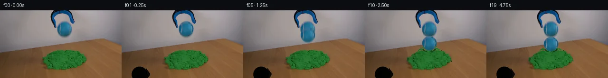

![首帧]()

Round 00
2026-11-05T04:19:19.188053+00:00像素候选变化代码 +390/−0inspection 更新
pixels add6b46a1f579e85 · code d8a286354a98b158
查看本轮 generate.py 真实 diff
--- previous/generate.py
+++ current/generate.py
@@ -0,0 +1,390 @@
+"""PixelWorld vision-input generator, case_0016.
+
+Scene: a blue tennis ball is released by a suspended blue-black grabber tool,
+falls onto a pile of green kinetic sand on a wooden table, and settles in a
+small crater. Pure local pixel processing: sprite extraction from frame 0,
+analytic wall inpaint, alpha compositing, displacement-warped sand, and a
+deterministic particle layer. No external models or assets.
+"""
+from pathlib import Path
+import numpy as np
+from PIL import Image, ImageDraw
+from scipy import ndimage
+import artifact_io
+
+HERE = Path(__file__).parent
+rng = np.random.default_rng(20261105)
+
+# ---------------------------------------------------------------- geometry --
+W, H = 256, 144
+XX, YY = np.mgrid[0:H, 0:W]
+CX0, CY0, BR = 135.6, 37.2, 15.2 # ball in frame 0
+SAND_CX, SAND_Y = 135.0, 84.0 # contact point on sand surface
+
+frame0 = np.array(Image.open(HERE / "first_frame.png").convert("RGB"))
+R0, G0, B0 = frame0[..., 0].astype(int), frame0[..., 1].astype(int), frame0[..., 2].astype(int)
+
+
+# --------------------------------------------------------- wall background --
+def fit_wall_plane():
+ wallish = ((np.abs(R0 - G0) < 14) & (np.abs(G0 - B0) < 14)
+ & (R0 > 90) & (R0 < 200) & (YY < 62) & (XX > 95) & (XX < 185))
+ wallish &= ~(((XX - CX0) ** 2 + (YY - CY0) ** 2) < 22 ** 2)
+ wallish &= ~((YY < 40) & (XX > 104) & (XX < 158))
+ ys, xs = np.where(wallish)
+ A = np.c_[np.ones_like(xs), xs, ys]
+ coef = []
+ for ch in range(3):
+ c, *_ = np.linalg.lstsq(A, frame0[ys, xs, ch].astype(float), rcond=None)
+ coef.append(c)
+ return np.array(coef)
+
+
+WALL_COEF = fit_wall_plane()
+
+
+def wall_picture(x, y):
+ out = np.empty(y.shape + (3,))
+ for i, c in enumerate(WALL_COEF):
+ out[..., i] = c[0] + c[1] * x + c[2] * y
+ return out
+
+
+def build_plate_and_masks():
+ d = np.hypot(XX - CX0, YY - CY0)
+
+ # ---- grabber layer: black outlines + deep blue connected to the arch ----
+ black = (R0 < 45) & (G0 < 45) & (B0 < 60) & (YY < 37)
+ bl, n = ndimage.label(black)
+ grab = np.zeros((H, W), bool)
+ for i in range(1, n + 1):
+ ys, xs = np.where(bl == i)
+ if len(xs) > 8 and ys.min() <= 3 and xs.max() <= 157:
+ grab |= bl == i
+ deep = ((B0 - R0 > 55) & (B0 > 105) & (G0 < 105) & (YY < 36) & (XX < 157))
+ dl, dn = ndimage.label(deep)
+ for i in range(1, dn + 1):
+ ys, xs = np.where(dl == i)
+ if ys.min() <= 12 or xs.max() < 120:
+ grab |= dl == i
+ grab &= ~((d < 7) & (YY > 30))
+
+ # ---- inpaint the ball (and its blur tail) out of the wall, keep grabber --
+ alpha = np.clip(BR + 1.8 - d, 0, 1)
+ ty = YY - 50.0
+ halfw = np.clip(15.0 - 1.4 * ty, 0, 15)
+ tail_a = np.clip(halfw - np.abs(XX - CX0), 0, 1) * np.clip((61.0 - YY) / 3.0, 0, 1)
+ tail_a *= (YY > 50).astype(float)
+ fill_a = np.maximum(alpha, tail_a * 0.9) * (~grab).astype(float)
+ wall = wall_picture(XX.astype(float), YY.astype(float))
+ filled = wall + rng.normal(0, 4.6, wall.shape)
+ a3 = fill_a[..., None]
+ plate = frame0.astype(float) * (1 - a3) + filled * a3
+
+ # ---- sand mask (colour key + hole fill) ----
+ green = (G0 > 90) & (G0 > R0 + 25) & (G0 > B0 + 20) & (YY > 75)
+ sand = ndimage.binary_dilation(green, iterations=2)
+ sand = ndimage.binary_fill_holes(sand)
… diff truncated; 303 more lines …